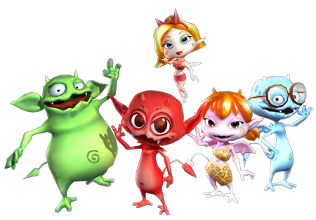

6 |
Storia |
 |
 Tanto tempo fa in una terra lontana, piccole e strane creature vivevano nelle profondità di Abyss. Cocoto, i suoi piccoli amici demoni e Fairy, la fata misteriosa, custodiscono il segreto del magma, fonte del loro potere, in un calderone magico. Nel frattempo Zaron, Dio dei fulmini, che brama questo potere sta tramando qualcosa...
Zaron è il sovrano di Heaven, il regno del cielo. Per raggiungere il suo scopo può contare sui sovrani degli altri regni che Cocoto dovrà attraversare...
Il tragico rapimento di Shiny, Baggy e Neuro ha lasciato Cocoto da solo nel compito di proteggere il calderone! Rifiutandosi di abbandonare i suoi amici, ha intenzione di trovarli insieme a Fairy. |
 |
 |
 |